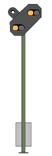
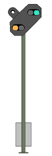
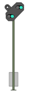

|
| Auch vor dem Bahnhof Altenbeken sind vor dem vorausliegenden Einfahrsignal mehrere Vorsignalwiederholer aufgestellt. |
 Das folgende Hauptsignal zeigt (immer noch) Halt:Drücken Sie unmittelbar nach Passieren des Vorsignalwiederholers Indusi-Wachsam (Enter-Taste im Zehnerblock). |
 Das folgende Hauptsignal zeigt Langsamfahrt (40km/h):Drücken Sie unmittelbar nach Passieren des Vorsignalwiederholers Indusi-Wachsam (Enter-Taste im Zehnerblock). |
 Das folgende Hauptsignal zeigt Fahrt:Sie dürfen mit Streckengeschwindigkeit weiterfahren (hier 80km/h) |